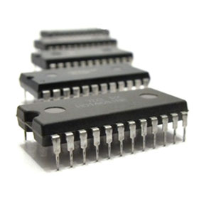

Het was de ontdekking van de IC of Integrated Circuit in 1958 die de derde generatie computers een beetje later inluidde.

De IC maakt het mogelijk om op een kleinere afstand tientallen transistoren te plaatsen. Dit zorgt op zijn beurt voor kleinere, snellere en goedkope elektronica. Een ander heel belangrijk kenmerk was het feit dat computers uit deze periode voor het eerst verschillende taken tegelijkertijd konden uitvoeren.
Eén programma was bijvoorbeeld bezig met het berekenen van data terwijl het andere op invoer aan het wachten was.